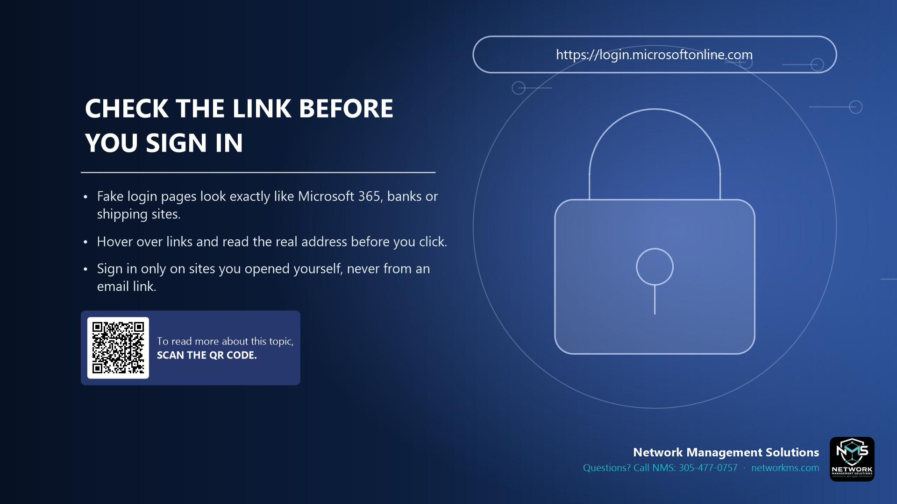

Check the link before you sign in

- Fake login pages look exactly like Microsoft 365, banks or shipping sites.
- Hover over links and read the real address before you click.
- Sign in only on sites you opened yourself, never from an email link.
A phishing link takes you to a copy of a real login page. Everything looks the same, but the password you type goes to the attacker.
Before you click, hover over the link (or press and hold on a phone) and read the address. The real company name must be right before the first single slash, for example login.microsoftonline.com, not microsoft.login-secure.co.
The lock icon (HTTPS) only means the connection is encrypted. Fake sites have it too. The address is what matters.
Safest habit: open the site yourself from a bookmark or by typing the address.
Not sure about an email, text or call? Call NMS before you click: 305-477-0757 · networkms.com